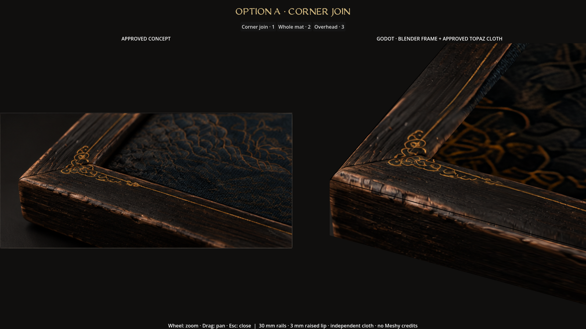
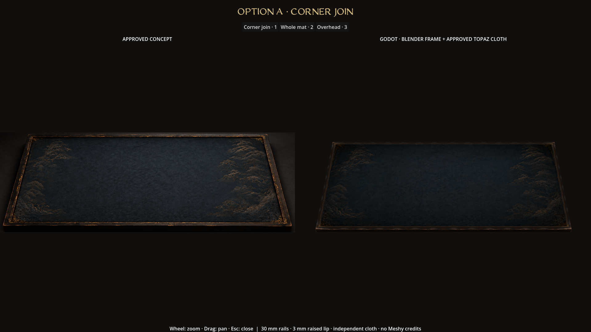
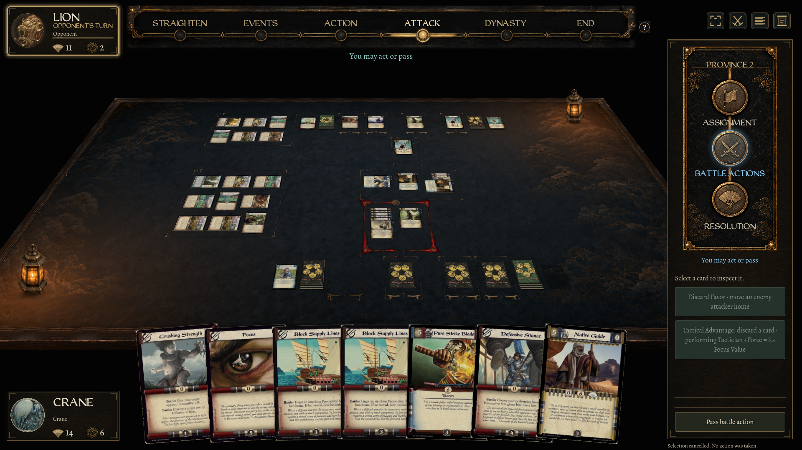
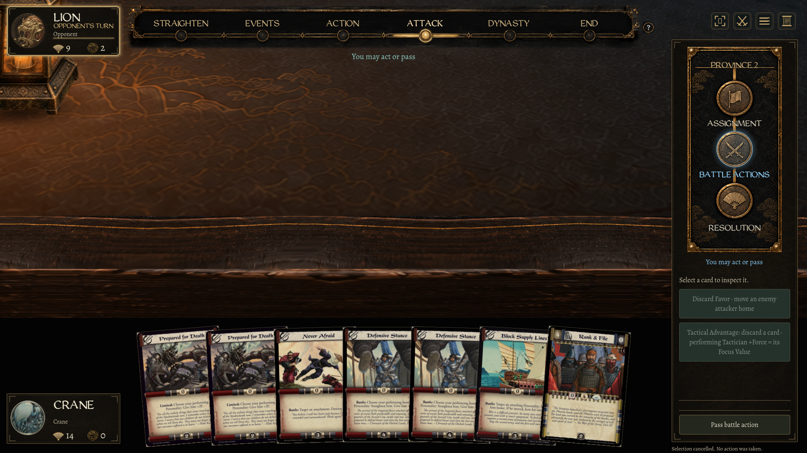
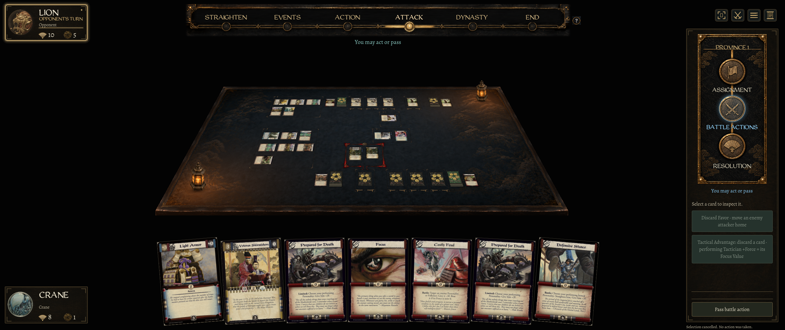
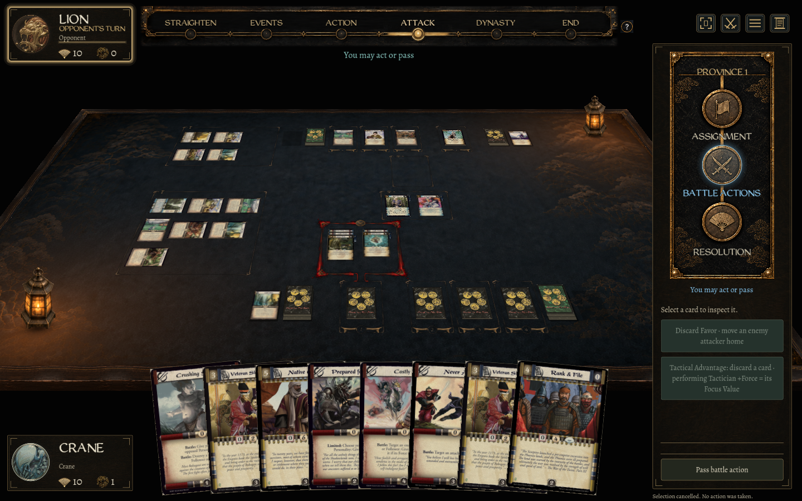
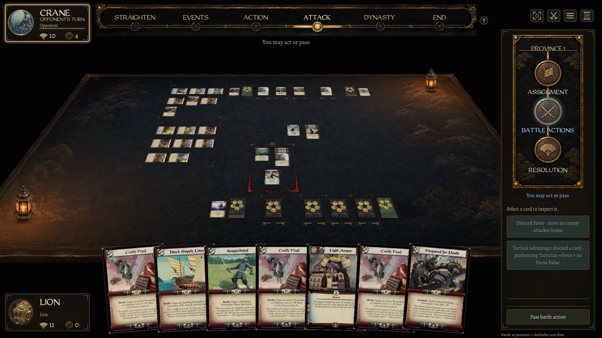

Option A · Worn black lacquer / corner join
Approved artwork on an independent Blender frame, around the existing Topaz mat. The close-up compares source pixels with native Godot geometry. Click any image to inspect it at full resolution.

Original ornament, grain and edge wear, mapped to mitered rails. The right view magnifies the model beyond normal gameplay scale; the Topaz cloth is preserved.

Complete assembly. Native perspective and texture sources remain separate; this is an appearance comparison, not an identical-camera pixel diff.

Live table at 1920 × 1080. The frame follows the mat and shares candle warmth; lantern silhouettes stay in front of the far rail.

Existing maximum zoom (2.0), focused at the near edge. Geometry LOD is disabled to preserve the detailed texture mapping through the game's custom projection.

2560 × 1080 at the existing widest zoom; all four rails stay joined around the mat.

1440 × 900, with native camera and card-input checks.

Reduced motion keeps the existing still candle treatment.
Mac Godot 4.7.2 Compatibility captures, 15 September 2026. Fixtures are separate matches, so cards differ between captures. Build and native checks passed. No native Windows graphical playtest is claimed. Meshy credits spent: 0.